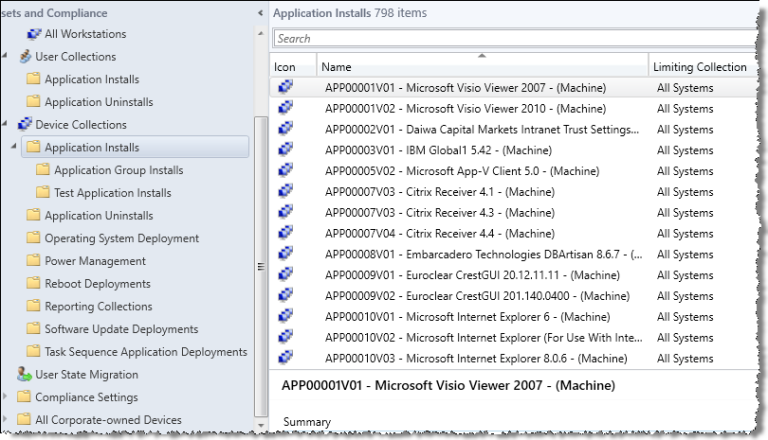
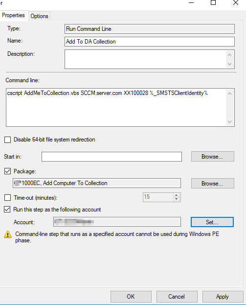

Automatically Sort Computers Into Collections

If you’re looking to organize new computers that you deploy, then this might be helpful.
First, save the following code as AddMeToCollection.vbs
'==========================================================================
'
' NAME: AddMeToCollection.vbs
'
' AUTHOR: Vinay, Microsoft
' DATE : 8/7/2010
'
' COMMENT: Script to add Unknown Computer to a specified collection during OSD
' USAGE: cscript AddMeToCollection.vbs %_SMSTSClientIdentity%
'==========================================================================
On Error Resume Next
Dim arrArguments
Set arrArguments = WScript.Arguments
If arrArguments.Count <> 3 Then
WScript.Echo "Usage: cscript AddMeToCollection.vbs %_SMSTSClientIdentity%"
WScript.Echo " and needs to be specified, but last parameter needs to be used as is."
WScript.Quit
End If
Dim strServer, strCollID, strProvNamespace
Dim strComputerName, strGUID, strResourceID
Dim strUser, strPassword
strResourceID = 0
strServer = arrArguments(0)
strCollID = arrArguments(1)
strGUID = arrArguments(2)
WScript.Echo ""
WScript.Echo "==================================="
WScript.Echo " ADDING COMPUTER TO COLLECTION"
WScript.Echo "==================================="
WScript.Echo "Site Server specified: " & strServer
WScript.Echo "Collection ID specified: " & strCollID
WScript.Echo "SMS Client " & strGUID
'Get the computer name
Set oNet = CreateObject("WScript.Network")
strComputerName = oNet.ComputerName
WScript.Echo "Computer Name: " & strComputerName
Set oNet = Nothing
'Connect to root/sms namespace on SMS Site Server to find the Provider Namespace
Set objLocator = CreateObject("WbemScripting.SWbemLocator")
Set oWbem = objLocator.ConnectServer(strServer, "root/sms")
If Err.number <> 0 Then
WScript.Echo "Error connecting to root\sms namespace to find Provider Location. Exiting!"
WScript.Echo "Error = " & Err.number & " - " & Err.Description
WScript.Quit
End If
Set colNameSpace = oWbem.ExecQuery("SELECT * FROM SMS_ProviderLocation")
For Each item in colNameSpace
WScript.Echo "SMS Provider Namespace = " & item.NamespacePath
strProvNamespace = item.NamespacePath
Next
'Connect to the Provider Namespace
Set oWbem = objLocator.ConnectServer(strServer, strProvNamespace)
If Err.number <> 0 Then
WScript.Echo "Error connecting to SMS Provider namespace. Exiting!"
WScript.Echo "Error = " & Err.number & " - " & Err.Description
WScript.Quit
Else
WScript.Echo "Successfully Connected to the SMS Provider Namespace"
End If
'Find out the Resource ID of the computer by querying SMS_R_System Class against the SMS GUID
Set colResources = oWbem.ExecQuery("SELECT ResourceID FROM SMS_R_System WHERE SMSUniqueIdentifier = '" & strGUID & "'")
For Each oResource In colResources
strResourceID = oResource.ResourceID
WScript.Echo "Resource ID = " & strResourceID
Next
'If Resource ID was not found, exit gracefully
If strResourceID = 0 Then
WScript.Echo "Could not find the Resource ID for the computer. Exiting!"
WScript.Quit
End If
'Verify if the specified collection exists
Set oCollection = oWbem.Get("SMS_Collection.CollectionID=" & """" & strCollID & """")
If oCollection.Name = "" Then
WScript.Echo "Specified Collection (" & strCollID & ") was Not Found. Exiting!"
WScript.Quit
End If
'Create a Direct Membership rule
Set oDirectRule = oWbem.Get("SMS_CollectionRuleDirect").SpawnInstance_ ()
oDirectRule.ResourceClassName = "SMS_R_System"
oDirectRule.ResourceID = strResourceID
oDirectRule.RuleName = strComputerName & " - SMSTS"
'Add the Direct Membership Rule to the specified collection
oCollection.AddMembershipRule oDirectRule
If Err.Number <> 0 Then
WScript.Echo "Could not add the computer to the specified collection. Exiting!"
WScript.Echo "Error = " & Err.number & " - " & Err.Description
WScript.Quit
Else
WScript.Echo strComputerName & " successfully added To " & strCollID
End If
WScript.Echo "==================================="
WScript.Echo ""
Set objLocator = Nothing
Set oWbem = Nothing
Set oCollection = Nothing
Set oDirectRule = Nothing
'End Script
Move it to a folder in your SCCM server and create a new package.


Now go to your Task Sequence and add a command line

Add the following command:
- Where
sccm.server.comis, replace it with your SCCM server. - For
XX1000E1, replace it with the collection’s ID.

I personally had to use a privileged account for it to work. I apply this after the client is installed, and from my testing, it failed without admin rights. As always, your mileage may vary.
How it can be used
This script can be super useful in environments where you deploy all kinds of image versions for different departments. For example, I use TsGui and created an XML GUI to choose which customization to apply to the image using variables. This script helped me add the device I’m imaging to the correct collection because I configure each department separately, as can be seen here:


Note
In my environment, the new device appears as “Unknown” fora while (15-30 minutes) but eventually gets the correct hostname.
Hope this has been useful to you 🙂